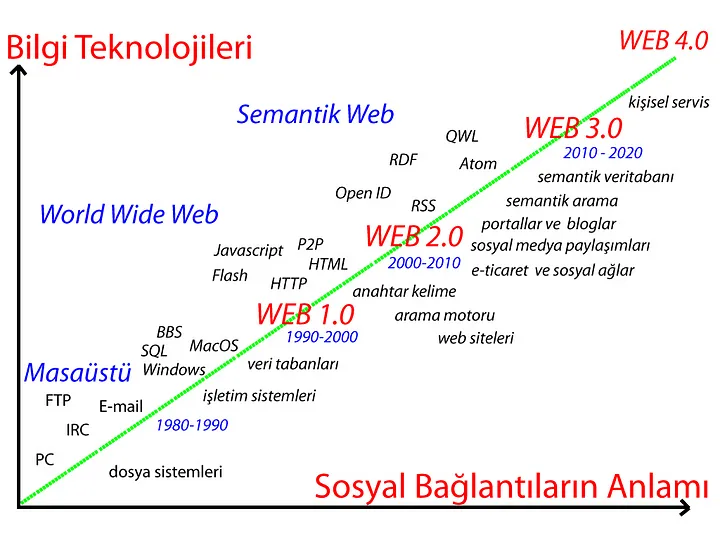

Web Teknolojisinin Dört Kuşağı: 1.0'dan 4.0'a Uzanan Yolculuk
Günümüzün dijital çağında, web teknolojileri hayatımızın vazgeçilmez bir parçası haline geldi. İnternetin evrimi, insanlığın bilgiye erişimini ve iletişimini kökten değiştirdi. İlk günlerinden bu yana, web teknolojileri sürekli olarak gelişerek daha hızlı, daha etkili ve daha erişilebilir hale geldi. Bu yazıda, web teknolojisinin heyecan verici yolculuğunu keşfetmeye ve geçmişten günümüze nasıl evrildiğini incelemeye odaklanacağız.

Öncelikle Web’in ne olduğuyla başlayalım. Web, ingilizce ‘ağ’ anlamına gelen bir kavramdır. Genellikle World Wide Web’in
(Dünya Çapında Ağ) ortak adı olarak kullanılır. Web internetin bir alt kümesi olup internet üzerinde erişilebilir olan
mekanizmaların kullanılmasına olanak sağlar. Bu nedenle internetle web’i aynı olarak düşünmemek gerekir.
Web kavramı,
Tim Berners-Lee’nin HTML adlı metin işaretleme dilini geliştirmesiyle oluşmuştur. Bu kavramın standartları da şu anda Tim’in
başkanı olduğu W3C (World Wide Web Consortium) tarafından belirlenmektedir.
Web Teknolojisinin Gelişimi
1990'lardan başlayan ve günümüze kadar uzanan bu teknolojinin gelişim aşamalarına bir göz atalım:
Web 1.0 (Doküman Odaklı Web)
Web 1.0, web teknolojisinin başlangıcını temsil ediyor. 1990–2000 yılları arasında kullanılan bu teknoloji, sadece bilgiye erişimi sağlıyordu. Kişiler bilgiyi okuyabiliyordu ancak herhangi bir yere yedekleyemiyor veya bu bilgiye erişen insanlarla herhangi bir etkileşimde bulunamıyordu. Günümüzdeki imkanları düşününce oldukça kısıtlı olan Web 1.0 'ın yerini etkileşime olanak veren 2.0 'a bırakması kaçınılmaz olmuştur.
Web 2.0 (İnsan Odaklı Web)
2000–2010 yılları arasında kullanılan Web 2.0 ‘ın en önemli gelişmesi etkileşime olanak sağlamasıdır. Kullanıcılar bu gelişme
ile birlikte internet kullanımında pasif bir konumdan aktif bir konuma geçiş yapmıştır. Web 2.0 ile bilgi yedeklenebilir,
paylaşılabilir hale gelmiştir. E-mail, mesajlaşma, sosyal medya uygulamaları Web 2.0 teknolojisinden sonra ortaya çıkmış;
kullanıcılarla iletişime geçme ve etkileşimde bulunma gibi uygulamalar bu teknoloji ile kullanılmaya başlanmıştır.
‘Etiket Bulutu’ adı verilen kavram sayesinde çeşitli paylaşımlara etiketler yapıştırılmış ve başka kullanıcıların da bu
yazılara ulaşmasını sağlayarak etkileşimin artırılması hedeflenmiştir.
Web 3.0 (Bilgi Odaklı Web)
2010–2020 yılları arasında kullanılan Web 3.0 için bireyselleşmiş Web teknolojisi diyebiliriz. Arama motoruna yazılan içerik yapay zeka sayesinde analiz edilip
kullanıcının isteğine göre sonuçlar çıkarıyor. Kullanıcının önceden yaptığı aramalar da analiz ediliyor, bu sayede benzer aramaları yapan
iki farklı kullanıcıya aynı sonuçlar yerine isteklerine en uygun olacak şekilde özelleşmiş sonuçlar çıkarılıyor. Bu da interneti kullanan
kişilerin aldığı verimi ve memnuniyeti artırıyor.
Web 3.0; şeffaf bir internet erişimine, verilerin smart contract (akıllı sözleşmeler) ile korunmasına,
kripto para kullanımına, blockchain teknolojisine, metaverse kullanımına olanak sağlıyor.
Web 3.0 ‘ın merkeziyetsizlik ve şeffaflık sağlamasının avantajları
olsa da bazı olumsuzlukları da beraberinde getiriyor. Bunlar siber suçların artması, güvenlik riskleri, manipülasyonlar ve dolandırıcılık olarak sıralanabilir.
Her yeni teknolojinin bazı olumsuzlukları oluyor bu yüzden kullanmaktan geri kalmamalı ancak dikkatli olmalıyız.
Günümüz Web Teknolojisi: Web 4.0 (Sanal Gerçeklik Odaklı Web)
2020 yılından itibaren kullanılmaya başlanan Web 4.0, işletim sisteminden tüm uygulamalara kadar her şeyin fiziksel disklerden
uzaklaştığı ve sanal platformlar üzerine kurulduğu bir teknolojidir. Bilgisayara yüklenen programlara ihtiyaç duymayan bu teknoloji
bulut sistemlerine bağlanarak internete erişimi sağlar. Bu teknolojinin kullanılabilmesi için saniyede 100 gigabit bağlantı ve bant
aralığı olması gerekiyor.
Yapay Zeka ve Artırılmış Gerçeklik teknolojisiyle uyumlu olan bu teknoloji makinelerle interneti birbirine bağlıyor.
Sanal gerçeklik teknolojilerini, IOT ‘yi(Internet of Things), hologramları, akıllı asistanları kullanılabilir hale getiriyor.
Bu teknolojinin 2030 yılına kadar kullanılacağı ve sonrasında yerini ihtiyaçlar dahilinde yenilenmiş olarak kullanılacak olan Web 5.0 ’a bırakacağı öngörülüyor.
Okuduğunuz için teşekkür ederim, umarım faydası dokunmuştur. Daha önce yazdığım yazılar için profilimi ziyaret edebilirsiniz. İleride yazacağım yazılarımda görüşmek dileğiyle 👋🏻